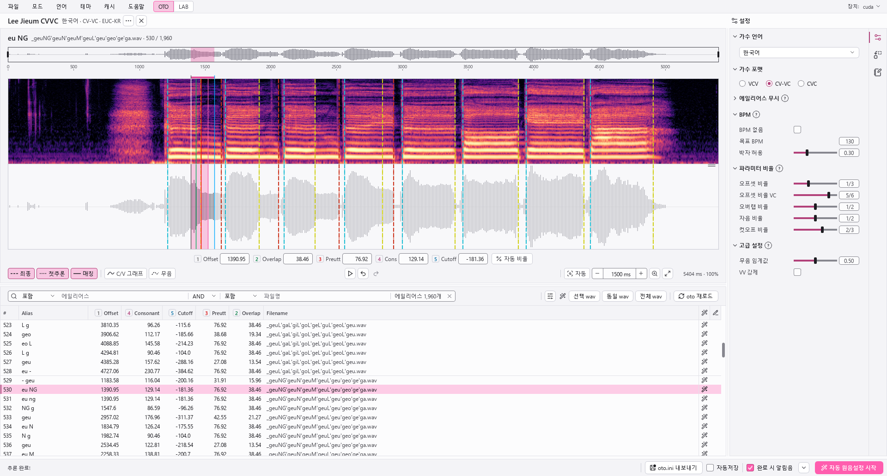
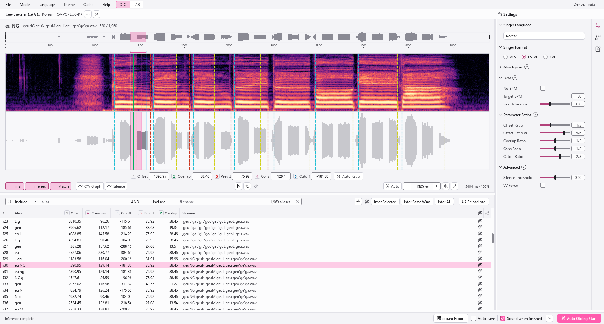

원음설정,
직접 찍는 시간은 줄이고
다듬는 시간만 남기세요
Stop setting oto by hand.
Let AI do the first draft.
原音設定、
打つ時間は減らして
整える時間だけに
Otomata 는 한국어·일본어 UTAU 음원의 원음설정(oto.ini)을 AI 로 자동 배치하는 Windows 도구입니다. 파일명으로 에일리어스를 만들고, 녹음을 듣고 경계를 찾아 몇 분 만에 초안을 완성합니다.
Otomata is a Windows tool that sets up oto.ini for Japanese and Korean UTAU voicebanks with AI. It builds aliases from your file names, listens to each recording and places every alias — a full draft in minutes.
Otomata は日本語・韓国語 UTAU 音源の原音設定(oto.ini)を AI で自動配置する Windows ツールです。ファイル名からエイリアスを作り、録音を聴いて境界を見つけ、数分で下書きを仕上げます。
Windows 10/11 · 출시 기념가 12/31 까지 · 1회 구매 · 업데이트 평생 무료
Windows 10/11 · Launch price until Dec 31 · One-time purchase · Free updates for life
Windows 10/11 · 発売記念価格 12/31 まで · 買い切り · アップデート永久無料


라벨링의 반복 작업을 도구에게
Leave the repetitive work to the tool
繰り返し作業はツールに
수백 개의 wav 에 같은 작업을 반복하는 대신, 초안은 Otomata 가 만듭니다.
Instead of repeating the same work on hundreds of wavs, let Otomata make the draft.
何百もの wav に同じ作業を繰り返す代わりに、下書きは Otomata が作ります。
AI 자동 원음설정
AI auto oto setting
AI 自動原音設定
학습된 모델이 녹음의 음소 경계를 찾아 오프셋 · 오버랩 · 선행발성 · 자음부 · 블랭크를 배치합니다. 전체, 고른 파일, 같은 wav 만 다시 돌릴 수 있습니다.
A trained model finds phoneme boundaries and places offset, overlap, preutterance, consonant and cutoff. Run it on everything, selected files, or one wav again.
学習済みモデルが音素境界を見つけ、オフセット・オーバーラップ・先行発声・子音部・ブランクを配置します。全体・選択ファイル・同じ wav だけの再推論も可能です。
파일명으로 에일리어스 생성
Aliases from file names
ファイル名からエイリアス生成
oto.ini 가 없어도 됩니다. 일본어 CV-VC · VCV(가나 · 로마자), 한국어 CV-VC · CVC · 연속음을 지원합니다.
No oto.ini needed. Supports Japanese CV-VC and VCV (kana or romaji) and Korean CV-VC, CVC and VCV.
oto.ini がなくても大丈夫。日本語 CV-VC・VCV(かな・ローマ字)、韓国語 CV-VC・CVC・連続音に対応。
파형 위에서 바로 편집
Edit right on the waveform
波形の上で直接編集
스펙트로그램과 파형을 보며 마커를 끌어 다듬고, 바로 들어 봅니다. 실행 취소와 단축키를 지원합니다.
Drag markers on the spectrogram and waveform, play back instantly. Undo and shortcuts included.
スペクトログラムと波形を見ながらマーカーをドラッグして調整、すぐ再生。元に戻す・ショートカット対応。
기존 작업과 호환 · LAB 편집기
Compatible · LAB editor
既存データと互換 · LAB エディタ
표준 oto.ini 를 그대로 읽고 씁니다. .lab 음소 경계를 보고 고치는 LAB 모드도 들어 있습니다.
Reads and writes standard oto.ini. Includes LAB mode to view and edit .lab phoneme labels.
標準の oto.ini をそのまま読み書き。.lab 音素境界を表示・編集する LAB モード付き。
세 단계면 충분합니다
Three steps
3 ステップで完了
음원 불러오기
Load
音源を開く
wav 폴더를 열고 언어와 녹음 방식을 고릅니다.
Open a wav folder and pick the language and format.
wav フォルダを開き、言語と収録方式を選びます。
자동 원음설정
Auto Otoing
自動原音設定
단추 하나로 모든 에일리어스의 초안을 만듭니다.
One click drafts every alias.
ボタン一つで全エイリアスの下書きを作成。
다듬고 내보내기
Refine & export
整えて書き出し
파형에서 확인 · 조정한 뒤 oto.ini 로 저장합니다.
Check and adjust on the waveform, then save oto.ini.
波形で確認・調整して oto.ini に保存。
가격
Pricing
価格
프로그램은 무료입니다. 라이선스는 자동 원음설정을 엽니다.
The app is free. A license unlocks Auto Otoing.
アプリは無料です。ライセンスで自動原音設定が使えるようになります。
- 음원 불러오기 · 스펙트로그램 · 재생
- 직접 편집 · 에일리어스 변경
- oto.ini 내보내기
- LAB 편집
- Load voicebanks · spectrogram · playback
- Manual editing · alias changes
- oto.ini export
- LAB editing
- 音源の読み込み・スペクトログラム・再生
- 手動編集・エイリアス変更
- oto.ini 書き出し
- LAB 編集
- 무료 기능 전부
- AI 자동 원음설정
- 키 하나로 PC 3대
- 업데이트 평생 무료
- 만든 원음설정 · 음원은 상업적 이용 자유
- Everything in Free
- AI Auto Otoing
- One key, up to 3 PCs
- Free updates for life
- Use your otos and voicebanks commercially
- 無料版のすべて
- AI 自動原音設定
- 1 キーで PC 3 台まで
- アップデート永久無料
- 作った原音設定・音源は商用利用 OK
결제는 판매 대행사 Lemon Squeezy 가 처리합니다(세금 포함 원화 표시, 해외 카드는 카드사 환율로 청구). 업데이트 평생 무료는 구매한 판에 적용되며, 자동 LAB 정렬처럼 따로 나오는 판은 포함되지 않습니다. 이용약관 · 환불
Payments are handled by Lemon Squeezy, our Merchant of Record (prices in KRW incl. tax; cards in other currencies are converted by your card issuer). Free updates apply to the edition you buy; separately sold editions such as automatic LAB alignment are not included. Terms & refunds
決済は販売代行の Lemon Squeezy が行います(税込ウォン表示、円などのカードはカード会社のレートで請求)。アップデート永久無料は購入したエディションが対象で、自動 LAB 整列など別売りのエディションは含まれません。利用規約・返金
구매와 설치
Buy & install
購入とインストール
결제
Pay
決済
구매하기에서 결제하면 라이선스 키가 메일로 옵니다.
Check out via Buy. Your license key arrives by e-mail.
購入から決済すると、ライセンスキーがメールで届きます。
내려받기 · 설치
Download & install
ダウンロード・インストール
다운로드 페이지에서 설치 파일을 받습니다. NVIDIA 그래픽카드가 있으면 GPU 판, 없으면 CPU 판.
Get the installer from the download page: GPU edition for NVIDIA cards, CPU edition for any PC.
ダウンロードページからインストーラーを入手。NVIDIA グラボがあれば GPU 版、なければ CPU 版。
키 입력
Enter the key
キーを入力
앱의 도움말 → 라이선스 → 키 입력에 붙여 넣으면 끝. 처음 한 번만 인터넷이 필요합니다.
Paste it in Help → License → Enter key. Internet is needed only once.
ヘルプ → ライセンス → キーを入力 に貼り付けて完了。インターネットは最初の 1 回だけ必要です。
사용 환경
Requirements
動作環境
- Windows 10 / 11 (64비트)
- CPU 판: 어느 PC 에서나 (설치 파일 약 660 MB)
- GPU 판: NVIDIA 그래픽카드 + 최신 드라이버(CUDA 12) — 더 빠릅니다 (약 2.5 GB, 파일 3개)
- 처음 설치할 때 'Windows의 PC 보호' 창이 뜨면 추가 정보 → 실행을 눌러 주세요.
- Windows 10 / 11 (64-bit)
- CPU edition: any PC (installer ≈ 660 MB)
- GPU edition: NVIDIA card + recent driver (CUDA 12) — faster (≈ 2.5 GB, 3 files)
- If “Windows protected your PC” appears, click More info → Run anyway.
- Windows 10 / 11(64 ビット)
- CPU 版: どの PC でも(インストーラー約 660 MB)
- GPU 版: NVIDIA グラボ + 最新ドライバ(CUDA 12)— より高速(約 2.5 GB、3 ファイル)
- 「Windows によって PC が保護されました」と出たら 詳細情報 → 実行 を押してください。
FAQ
어떤 음원에 쓸 수 있나요?
파일명에 발음이 적힌 한국어 · 일본어 UTAU 음원입니다. 다른 언어는 직접 편집만 됩니다.
결과가 완벽한가요?
초안을 빠르게 만들어 주는 도구입니다. 결과를 확인하고 필요한 곳을 손으로 다듬어 주세요.
GPU 가 꼭 필요한가요?
아니요. CPU 판도 같은 결과를 내며 시간만 더 걸립니다.
PC 를 바꾸면요?
도움말 → 라이선스에서 예전 PC 를 해제하고 새 PC 에 키를 넣으면 됩니다. PC 가 고장 나 해제하지 못했다면 문의해 주세요.
환불할 수 있나요?
구매 후 7일 이내라면 키를 등록했더라도 이유와 관계없이 전액 환불됩니다. 14일 이내라도 키를 등록하지 않았다면 전액 환불되며, 설명대로 작동하지 않는 경우는 그 뒤에도 환불됩니다. 자세한 내용은 이용약관을 참고하세요.
AI 를 어떻게 쓰나요?
자동 원음설정은 음소 경계를 찾는 AI 모델이 합니다. 모델은 개발자 본인 데이터, 서면 동의를 받은 데이터 제공자의 녹음 · 라벨, 이용이 허락된 공개 학습용 데이터(AI 허브 「다음색 가이드보컬 데이터」)로 학습했으며, 웹에서 무단으로 모은 데이터는 쓰지 않았습니다. 목소리를 만들거나 흉내 내지 않습니다. 또한 프로그램 코드의 일부는 AI(Claude)와 함께 작성했습니다 — AI 가 작성한 코드를 피하고 싶은 분들을 위해 미리 알려 드립니다.
macOS 에서 되나요?
지금은 Windows 만 지원합니다.
내 음성이 서버로 가나요?
아니요. 녹음 · oto.ini · lab 파일은 PC 안에서만 처리됩니다. 개인정보 처리방침
Which voicebanks does it support?
Japanese and Korean UTAU voicebanks with the pronunciation in the file names. Other languages can be edited manually.
Are the results perfect?
It makes a fast first draft. Check the results and fine-tune where needed.
Do I need a GPU?
No. The CPU edition gives the same results, just slower.
What if I change PCs?
Remove the old PC in Help → License and enter the key on the new one. If your PC broke before you could remove it, contact us.
Can I get a refund?
Yes — within 7 days of purchase for any reason, even after activation; within 14 days if the key has not been activated; and later if Otomata does not work as described. See the Terms of Use.
How is AI used?
Auto Otoing is done by an AI model that finds phoneme boundaries. It was trained on the developer's own data, recordings and labels contributed with written consent, and public datasets licensed for AI training (the “Multi-timbre Guide Vocal Data” from AI Hub) — no data scraped from the web. It does not generate or imitate voices. Parts of the program's code were also written together with AI (Claude); we disclose this for those who prefer to avoid AI-written code.
Does it work on macOS?
Windows only for now.
Are my recordings uploaded?
No. Recordings, oto.ini and lab files are processed only on your PC. Privacy Policy
どんな音源に使えますか?
ファイル名に発音が書かれた日本語・韓国語の UTAU 音源です。その他の言語は手動編集のみです。
結果は完璧ですか?
下書きを素早く作るツールです。結果を確認し、必要なところを手で整えてください。
GPU は必須ですか?
いいえ。CPU 版でも同じ結果になり、時間が少し長くかかるだけです。
PC を替えたら?
ヘルプ → ライセンス で旧 PC を解除し、新しい PC にキーを入力してください。故障で解除できなかった場合はご連絡ください。
返金できますか?
購入後 7 日以内なら、キー登録後でも理由を問わず全額返金します。14 日以内でもキー未登録なら全額返金し、説明どおりに動作しない場合はその後も返金します。詳しくは利用規約をご覧ください。
AI はどう使われていますか?
自動原音設定は音素境界を見つける AI モデルが行います。モデルは開発者自身のデータ、書面で同意を得たデータ提供者の録音・ラベル、AI 学習への利用が許可された公開データ(AI Hub「多音色ガイドボーカルデータ」)で学習しており、ウェブから無断で集めたデータは使っていません。声を作ったり真似たりはしません。また、プログラムのコードの一部は AI(Claude)と一緒に書きました。AI が書いたコードを避けたい方のために事前にお知らせします。
macOS で使えますか?
現在は Windows のみ対応です。
録音がサーバーに送られますか?
いいえ。録音・oto.ini・lab ファイルは PC の中だけで処理されます。プライバシーポリシー